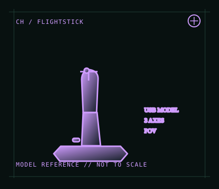

[ JOYSTICK CONTROLLERS // IDENTIFIED COMPONENT ]
CH Products Flightstick Pro USB
Compact ambidextrous USB joystick with three axes, a trigger and POV control for desktop flight games.

MODEL IDENTIFICATION: CH Products Flightstick Pro USB; verify the base label and connector because legacy Flightstick Pro versions differ. Published family specifications may not establish the revision or condition of an individual unit; compare its label and included parts with the linked documentation.
Model specifications
| Catalog subcategory | Joystick controllers |
|---|---|
| Exact model / identifier | CH Products Flightstick Pro USB; verify the base label and connector because legacy Flightstick Pro versions differ. |
| Design and controls | Compact ambidextrous handle with three axes, trigger, buttons and an 8-way POV hat in the USB model. Its smaller control set favors straightforward desktop mapping rather than a full HOTAS cockpit. |
| Physical interface | USB connection with basic joystick/HID input. The Flightstick Pro does not include a separate throttle quadrant; assign its additional axis in the simulator or add a compatible controller. |
| Host compatibility | CH product information describes USB computer use on PC and Mac. Application support for the POV hat, third axis and programmed functions depends on the operating system and simulator. |
| Driver and configuration | Basic USB use relies on host HID support. CH Control Manager is an optional Windows utility for programmable functions; do not assume it supports every contemporary Windows build or macOS. |
Setup and control mapping
Map the two primary axes to pitch and roll; use the third axis for throttle or rudder. Put the most-used command on the trigger, reserve buttons for core actions, and test all eight POV directions in the target application.
Before use, connect the device directly to the stated host, confirm it appears once in the operating system’s controller list, and test every axis and button. Keep host calibration separate from in-game dead-zone and sensitivity settings so later maintenance can reproduce the baseline.
Preservation and service notes
Check that the stick moves freely and returns consistently, then test the trigger, each button and all hat directions. For an archive record, photograph the connection and underside label and note whether the unit is USB or a legacy gameport revision.
Revision caveat: The Flightstick Pro name covers different historical interfaces. This record is for the USB model; a legacy DA-15/gameport unit is not directly interchangeable without compatible vintage hardware or a verified adapter.
For a physical archive entry, record the as-found label, serial/part number where present, accessories, host OS, driver or firmware version, and test method. Separate observed condition from published specifications.
References and support
- Flightstick Pro — CH Products product informationManufacturer description for Flightstick Pro; verify the USB model before applying it to an item.
- Downloads and community links — CH ProductsManufacturer software/download index, including Control Manager and product documentation.
Vendor pages and downloads can be revised or retired. Preserve the applicable manual locally and note its revision; use the exact product label when choosing firmware or drivers.